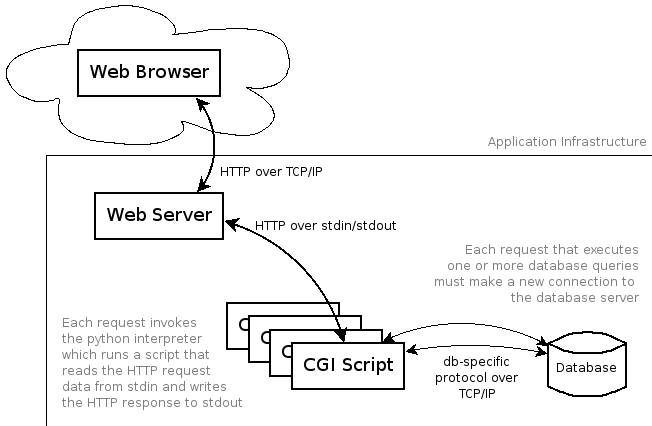
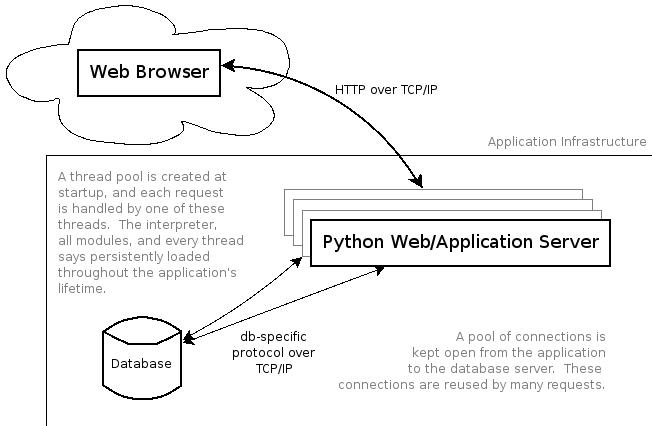
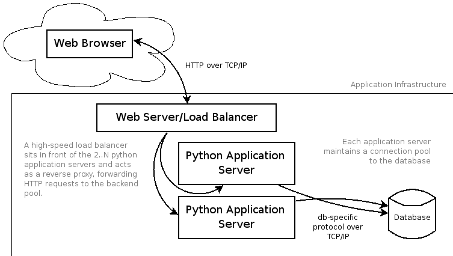
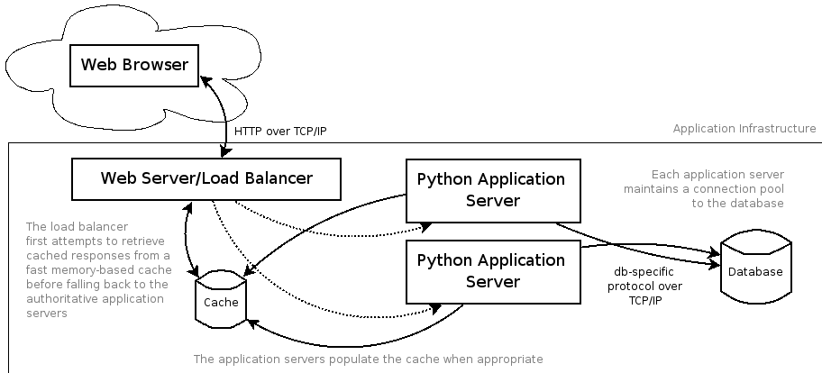

Scaling Python for High-Load Web Sites
David Shoemaker & Jamie Turner
Polimetrix, Inc.
At Polimetrix we conduct surveys and political polls on the web at pollingpoint.com. As such, our traffic increases significantly at election time. As the 2006 election approached, we realized that our web traffic would soon be about 10x what it normally is. We set about making sure our systems could handle that load. Today we want to share some things we learned during this process.
The Paradox of Choice
There are a lot of freakin' web frameworks...

It's an interesting--and great--time to be a python web developer.. A few years ago web frameworks were largely underdeveloped and undocumented. Now we have mountains of frameworks and tools available, many with excellent documentation and very active user communities. New ideas emerge every day about developing websites in more elegant, more reusable, more efficient ways. And with each of these ideas, dozens more frameworks are born.
The Paradox of Choice
... and these are just the ones with cool logos.
... in fairness, we were going to just list all the ones w/out cool logos, but this is only a 25' screen.
All that Aside...
Let's focus on methods, not web frameworks
Fast Enough
How fast is fast enough?
- It bears repeating: don't prematurely optimize
- Don't guess, know
- Always focus on one "pinch point" at a time
Premature optimization is the root of all evil. All optimizations should be based on an observed deficiency and should target a specific bottleneck in the application. Good logging and load testing are required to diagnose performance issues. It is much easier to verify that an optimization works if one problem is addressed at a time, in serial.
This isn't Fast Enough
Oh. Okay, then.
Well how fast is "Fast"?
- Static: 4000, dynamic (python): 400, db: 40
- Sustained 40 req/s is 3.4m pages/day
- Hundreds to low thousands of dynamic page views is usually Good Enough™
- 1000+ pages/s (86.4M pages/day) is a "caviar problem"
* Note about "orders of magnitude" rule of thumb * Faster than 1000+ pages/s is out of scope for this talk, because it right at the outer limit of what very, very good single machine can do with an RDBMS. (That gets into db replicates/clusters, reads vs. writes, database partitioning, etc) * Maybe refer to brad@lj's talks for more on that (perl, but we'll let that slide)
But "Python Can't Scale"!
Scaling isn't about languages, it's about:
- Don't Repeat Yourself
- Shared Nothing
We've tried to distill the process down to a couple of main ideas. Many of the optimization decisions we make are based on these two principles. For our demo we will employ a few open source tools. You might choose to use other tools, proprietary or open source.
The Example Application
Flickr Killr
Show the app in a web browser (CGI version). We put together a tiny web application that we will use to demonstrate and benchmark some of the methods we're discussing today. It's a database-backed, dynamically generated page that includes several static files. The application looks kind of like photo organizing software (hence the name). We've populated the database with over 100k users and over 1 million photos. We have created a benchmarker script that simulates a browser requesting this page. It makes requests to a list of URLs in rapid succession, and is multithreaded to simulate concurrency. The benchmarker then outputs some interesting stats, such as req/sec and average req time.
Flickr-Killr-0.1-py2.5.egg
Flickr Killr 0.1
The CGI Strawman
Flickr-Killr-0.1-py2.5.egg
Version 0.1 Architecture
The web server invokes the Python interpreter and runs the CGI script. The script prints its output to stdout, which is then written back to the client as an HTTP response. We realize that this is a somewhat outdated architecture, but PHP coders work with only marginally better systems on a daily basis. Do some benchmarking.
Flickr-Killr-0.1-py2.5.egg
What's wrong with this picture?
- The Python interpreter is started for each request
- All resources are initialized from scratch for each request
-
import psycopg2
conn = psycopg2.connect(database='pycon',host='localhost')
There is some startup cost associated with the interpreter itself and loading the modules needed by the application. Things like database connections, parsed page templates, and other application-specific initialization can, and should, live longer than one request.
Flickr-Killr-0.1-py2.5.egg
Let's remedy some of these issues
- Run Python web server
- Make one database connection per thread, instead of per request
With the long-running Python process we can do all initialization up front when the server starts.
Flickr-Killr-0.1-py2.5.egg
Other options
- FastCGI
- Other Python web servers (snakelets, twisted.web, RhubarbTart...)
- Apache/mod_python
There are a few different multi-programming models to consider here. In general the threaded model can handle more concurrent connections than the multiprocess model, and async can handle more than threaded. However, concurrent connections is very often not the bottleneck. Other factors should influence this decision. The methods we're trying to hilight in this talk apply no matter which model you choose.
flickr-killr-users@flickrkillr.org
Flickr Killr 0.2
A slice of CherryPy
flickr-killr-users@flickrkillr.org
Version 0.2 Architecture
flickr-killr-users@flickrkillr.org
What's wrong with this picture?
- The GIL: Global Interpreter Lock
- Sessions in the database
cur.execute('select username from users where id = %s', (userid,))
This is already a huge improvement over the CGI version, but it's far from perfect. For one, we're running this on a dual core machine, but Python's GIL prevents us from using the second core. Another problem worth mentioning is that we are effectively fetching the session from the database for each request. Since the session is such an frequently-accessed resource, we prefer a more efficient session store. We're not going to demo this today, but Jamie has written a network-bound session daemon called Pear, which you can check out in the cheese shop.
flickr-killr-users@flickrkillr.org
Let's remedy some of these issues
- Run two instances of CherryPy
- Use a load balancer: nginx
- Make sure we adhere to Shared Nothing™
We can run two (or more) instances of CherryPy to take advantage of multi-core and multi-cpu architectures. For your load balancer you almost certainly want to use the async MPM. It has to deal with a lot of concurrent connections, and it has to do so quickly. Shared Nothing means that each node is independent and doesn't keep any application state locally. In the context of a web application this is important because consecutive requests could be distributed to different servers. There is an added benefit of putting nginx out in front of CherryPy. Often the response needs to be slowly trickled back to a client on a low bandwidth connection. With this setup, CherryPy can send it's response to nginx very quickly across the local network (or on localhost) and nginx can keep tons of connections open to the slow clients, or even idle, between-request keepalive clients. The CherryPy threads are free to handle new requests.
flickr-killr-users@flickrkillr.org
Other options
- Run CherryPy in Apache with mod_python
The multiprocess MPM on the application server also takes advantage of multi-core and multi-CPU machines. This setup is not as memory efficient, however, and we'll need to get a reverse proxy involved anyway when we want to involve different physical machines.
www.flickrkillr-mashups.com
Flickr Killr 0.3
Have your CherryPy and eat it too
www.flickrkillr-mashups.com
Version 0.3 Architecture
www.flickrkillr-mashups.com
What's wrong with this picture?
- Static files are being read from disk every time
- They're being read and written by Python
-
photos = db.execute('''
select p.id, p.filename, p.description
from users u join photos p on u.id = p.userid
where p.userid = %s''', (userid,)).fetchall()
OS disk cache will help this problem, but it is still inefficient to have a Python process reading and writing this data. Our total number of threads is finite, so we only want them working on generating dynamic content. This is another problem best solved by an asynchronous server.
www.flickrkillr-mashups.com
Let's remedy some of these issues
- Put the static files in a memory cache: memcached
- Tell nginx how to find them in memcached
For this demo we have written a CherryPy tool that inserts static content into memcached as it is requested. memcached keeps the files in memory and can handle tens of thousands of requests per second. We will instruct nginx to look for files there first, and fall back to CherryPy if the file is not found in the cache. The vast majority of requests for static content will never even be seen by CherryPy.
www.flickrkillr-mashups.com
Other options
- Squid and other reverse-proxy caches
- Use a fast web server like lighttpd, if your deployment includes it
Another caching option is to put a web cache out in front of the site that automatically caches certain resources and intercepts requests as they come in. This method makes your application completely unaware that the cache even exists. If you choose to use lighttpd as your reverse proxy and load balancer, it might make sense to just let lighttpd serve static content from disk.
NASDAQ: FLKL
Flickr Killr 0.4
Cache money
NASDAQ: FLKL
Version 0.4 Architecture
Story about pollster.com running on a blade, database and all.
NASDAQ: FLKL
What's wrong with this picture?
- We'll leave that as an exercise for the audience members
NASDAQ: FLKL
In summary
NASDAQ: FLKL
Don't forget to index
- A missing index in the database can trump all other optimizations
- Turn on query performance logging to see which queries are taxing your RDBMS
Version 0.4 has provided a huge improvement over the CGI version, but we could quickly be looking at version 0.1 performance if we don't have our database properly indexed. In this case, the userid column of the photos table is the crucial column. Drop the index, run the benchmarking, recreate the index. Story about how a missing index in Gryphon caused our RDBMS to be CPU bound and we thought there was no way we could handle election load.
Google Photo Organizr
Automating deployment will certainly be worth your time
It gets really annoying after just 2 or 3 machines are involved. Jamie wrote a really slick system for deploying Python apps on many machines. It was a fairly big project, but it has paid huge dividends. Being able to manage deployment from one machine and quickly add/upgrade nodes is key.
Thanks for listening
All demo code and config files at http://www.polimetrix.com/pycon/demo.tar.gz
Question time
Jamie wrote a really slick system for deploying Python apps on many machines. It was a fairly big project, but it has paid huge dividends. Being able to manage deployment from one machine and quickly add/upgrade nodes is key.